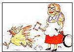

LAST LAUGH
We interrupt the ongoing rail ramblings of the Plumtree Crossing Continental Cruisers just in time to share the following message sent to us by Jeff Taylor, whose cautionary tale concerns that upcoming national trauma-the holidays.
When I was growing up, we celebrated every Thanksgiving and Christmas at Aunt Lucy's house in the country. At her insistence, some 30 souls, counting kids and dogs, Would gather there: a running pack of uncles arguing sports and politics, a gaggle of aunts underfoot in her huge country kitchen and a small herd of kids in search-and destroy mode among valuable heirlooms.
"Pshaw," she'd grate out after we kids tipped over a hutch full of dishes, "that china was so old that Washington ate off it once! High time to buy new!"
Aunt Lucy always rushed about during the holidays, a gingham whirlwind cooking, cleaning, taking part in several conversations, mediating heated arguments between crazed adults or rioting children and drinking coffee nonstop to keep her warp drive on maximum. She refused all offers of help. She always insisted, panting, that these gatherings were "no work at all, no trouble; why, it wouldn't be the holidays otherwise." Then she'd light another cigarette, compulsively explaining that nicotinic acid was really pure niacin, an important B-complex vitamin.
But it was clear that stress was taking its awful toll. She'd fret about overcooking the turkey, about finding the ideal gift for each person, about making the holidays perfect. Somewhere, unfortunately, she'd read that stress was the tension that gave life its spring and that certain people thrived on it. She thought she was one of those people. "I just love the hustling and bustling," she'd claim. But just before one fateful Thanksgiving, she was sometimes pronouncing that last word "buttsling.
" Little slips like that, say the psychologists, can be warning signs.
There were others, like the wrinkles on her brow that'd grown deep enough to hide a penny. All in all, though, she hid the strain well, until that one Thanksgiving. After it, she was a changed person, no longer worrying about Turkeyday tidiness or Yuletide logistics. The wrinkles disappeared.
She'd found a cure for stress.
That Thanksgiving, Aunt Lucy stood in the dooryard, wiping her hands on her apron as the first cars of the fleet pulled in and belched out relatives. As usual, she'd worked round the clock for three days cleaning house, preparing the main feast and all the trimmings, baking pies and putting them under little tinfoil tents-knowing all the time that Christmas was thundering up next. Her face looked as if she were riding in a NASA centrifuge: smiling, sort of, but under considerable strain.
With a wan wave, she greeted the holiday hordes. Then as the guests began to stream inside, she slumped suddenly against the porch post. Her hand went to her head, and she made a little sound, a soft "urk!" (I'm pretty sure I saw two faint wisps of smoke coming from her ears.)
Then she took a deep, deep breath. A strange, lopsided smile began to twitch on her lips, and her eyes danced like marbles in a blender. She reached into the kindling box on the porch and pulled out a hatchet. She fingered the edge carefully.
A few of us stepped back and she seemed to notice us for the first time. "Land sakes, look at you all. We'll need another turkey!" she exclaimed. Her gaze went past us to her little flock. One big gobbler strutted away nervously, and Aunt Lucy smiled and pointed with her hatchet. "That one," she nodded. Then she added softly, "is the informer.
" From that day on, she was a changed woman, completely calm and stress-free, but with marked eccentricities. Aunt Lucy never smoked another cigarette ("The FBI puts poison in 'em"), and her smooth forehead creased only when she talked about secret government agencies stealing eggs from her hen house.
As always, she'd rise early to start the morning breakfast, muttering ampersands and octothorps at the cranky old woodstove. But she delegated most other chores now. "I must have been crazy to work that hard before," she'd laugh gaily, even wildly, as she played with us kids. "Smash something else, young'uns," she'd urge us on, handing us fresh china and cackling as it hit and the pieces skittered over the floor.
She stopped using recipes altogether, relying on "the voices" to tell her which ingredients to use. She still made tables full of pies and cookies, but she'd always tuck an extra sheet or two of tinfoil down her bodice and wink, "Stops the &#&!% x-rays, when They fly over in their invisible jet aeroplanes.
" And now she no longer tolerated raised voices or unkind words; the old house grew very quiet and peaceful. Everyone became more relaxed and filled with the true spirit of the holidays. Stress was, to put it simply, unwelcome under her rooftree on holidays, and at the first sign of an argument, she'd shake her old head sadly and sigh, "Guess it's time for Dr. Griswold to administer a sedative." Then she'd take the Griswold No. 9 frying pan down off the wall and investigate the commotion. Like an ancient Apache, Aunt Lucy would creep up behind both parties and give them both a solid chop with her cast-iron mediator. When they came to, usually neither one could remember what they were arguing about. Or with whom.
And above the evergreen wreath on her front door, she tacked up a sampler, on which was embroidered a reminder:
This holiday season, put all cares behind, If life is the fruit, then worry's the rind, Put a smile on your face, hold your head up high,
In this house you're safe from the FBI.
|
 |
|
|